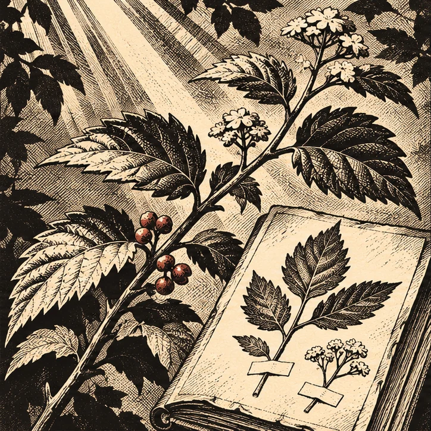
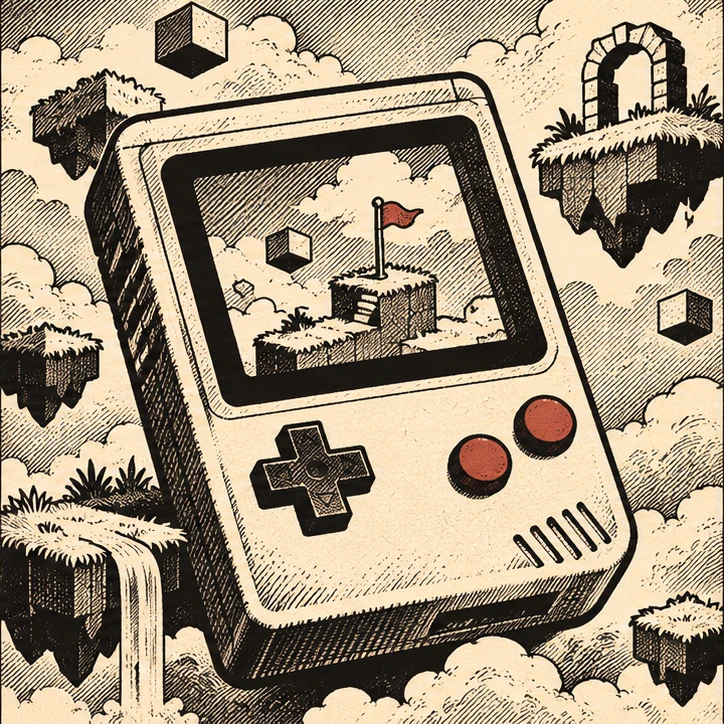

01MOBILE / PLANT RECOGNITION
Hanap Medisina
A little clarity in the natural world. Medicinal plant information, available offline.
IT STUDENT / DEVELOPER
I’m John Francis. I turn curiosity into things you can use.
CHAPTER 01 / SELECTED WORK
Three projects.
Three different questions.

01MOBILE / PLANT RECOGNITION
A little clarity in the natural world. Medicinal plant information, available offline.

02APPLICATION / GAME LIBRARY
Old adventures. A new home. A simple way to browse and organize a game library.
MOBILE / PERSONAL SECURITY
A quiet place for what matters. An encrypted, offline home for personal information.
CHAPTER 02 / THE PERSON
I’m John Francis Marabe, an Information Technology student in the Philippines.
I learn by making things, following a question until it becomes something useful.
BS Information Technology
Dalubhasaan ng Lungsod ng San Pablo
Expected graduation · 2027
CHAPTER 03 / THE NEXT CHAPTER